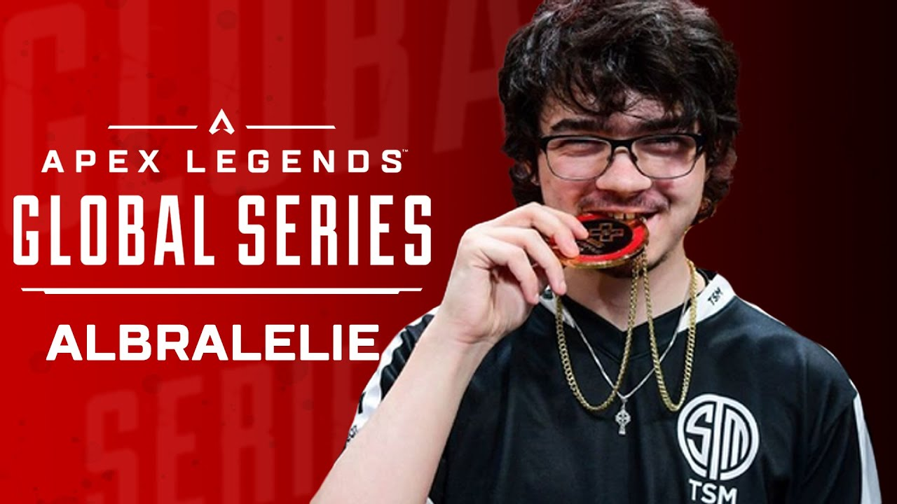

Mac "Albralelie" Beckwith

Mac "Albralelie" Beckwith (born September 13, 2000) is an American player who is currently playing for Wildcard Gaming. He is an exceptional Apex Legends player known for his incredible mechanical skills and exceptional aim. His mastery of movement, tracking, and positioning has made him one of the most respected players in the competitive scene. Albralelie's ability to make precise and calculated plays has helped him achieve remarkable success in tournaments.
Early Career and Rise to Prominence
Albralelie began his journey in Apex Legends during the early stages of the game's competitive scene. He quickly gained recognition for his exceptional mechanical skills and strategic gameplay. As his talent became evident, Albralelie started to make a name for himself among both players and fans.Joining Team SoloMid (TSM)
Albralelie joined Team SoloMid (TSM), a highly respected esports organization, as a member of their Apex Legends roster. His partnership with TSM allowed him to compete at the highest level and further showcase his skills on the professional stage.Tournament Success
Albralelie has participated in numerous high-profile tournaments and consistently demonstrated his exceptional abilities. He has secured impressive placements and victories, contributing significantly to TSM's success in various competitions.Individual Achievements
Throughout his career, Albralelie has earned a reputation for his consistent and remarkable performances as an individual player. He has achieved high kill counts, clutch plays, and made crucial contributions to his team's overall success.Influencing the Meta
Albralelie's playstyle and innovative strategies have had a significant impact on the Apex Legends meta. His approach to movement, positioning, and weapon choices has influenced other players and teams, shaping the evolving competitive landscape of the game.Streaming and Content Creation
Alongside his professional career, Albralelie has built a strong presence as a streamer and content creator. He engages with his audience, provides insights into his gameplay, and showcases his skills through entertaining streams and videos.